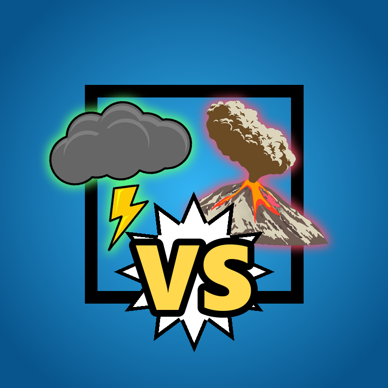

Privacy Policy
Last updated: November 3, 2026
Overview
This policy covers the Fightsim uploader, a desktop tool that the Fightsim channel owner runs on their own computer to upload their own videos to YouTube and manage comments on them. The tool uses YouTube API Services. By using it you also agree to the YouTube Terms of Service, and Google's handling of your data is described in the Google Privacy Policy.
What data the tool accesses
- The OAuth permission
youtube.upload, which lets it upload videos to the YouTube channel you choose when signing in. - The OAuth permission
youtube.force-ssl, which it uses only to: read the channel's own list of uploaded videos and their public/private status; read the public comments on the channel's own public videos (comment text, like count and date); and, when the channel owner runs the comments command, post one comment as the channel on each of its own videos ("Comment if you would like to see a new fight or a new character!"), and reply to a viewer's comment with the link to the video made from their suggestion. - The video files and their titles and descriptions, which the tool creates locally on your computer.
The tool does not read subscribers, analytics, contacts, or any other account information, does not access other channels' videos, and never edits or deletes videos or comments.
How the data is used and stored
- The sign-in token is stored only on your own computer (in the tool's
secretsfolder) and is used only for the actions listed above. - A local log records which video files were uploaded and their YouTube video IDs, so nothing is uploaded twice.
- To choose which fights and characters to make next, the tool saves the 10 most-liked viewer comments (text, like count, date and video link) in a local file. Commenters' names or channel IDs are not stored. Saved comments are refreshed on every run and deleted after at most 30 days. Comments that suggest a fight or character are kept (text and comment ID) in a local request list so the tool can reply once the video is out; these are also deleted after at most 30 days.
- To read those suggestions, the text of the most-liked comments (without commenter names or channel IDs) is processed by Anthropic's Claude AI, which the channel owner runs on their own computer; see Anthropic's Privacy Policy. Apart from this, no data is sent to any server other than Google's YouTube API, and no data is sold, shared with other third parties, or used for advertising.
- The tool uses no cookies, analytics, or tracking.
Removing access and deleting data
You can revoke the tool's access at any time from your Google Account's
third-party access page. Deleting the tool's
secrets folder removes the stored token from your computer, and deleting its comments folder removes
saved comments. Requests to delete data can be sent to the contact below and are handled within 7 days. Uploaded videos can be deleted in YouTube Studio.
Contact
Questions about this policy: jorgedavilaanimal@gmail.com